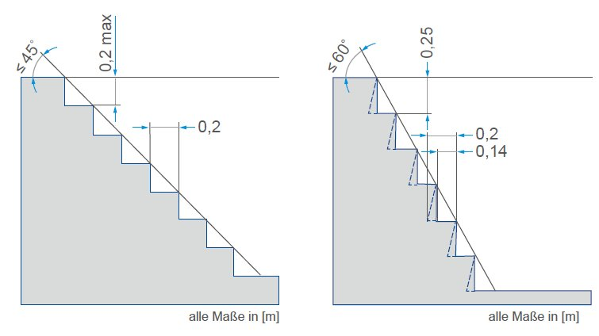
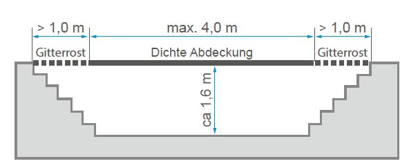
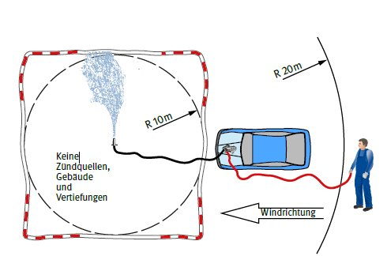

13 Allgemeine Anforderungen
an die Arbeitsstätte
13.1 Fußböden in Werkstatträumen
Fußböden in Werkstatträumen müssen eben, tragfähig, trittsicher und rutschhemmend sein. Sie dürfen keine Löcher, Stolperstellen oder gefährliche Schrägen aufweisen.
Fußböden in Werkstatträumen erfordern eine Rutschhemmung der Bewertungsgruppe R 11. In Arbeits- und Prüfgruben ist eine Rutschhemmung der Bewertungsgruppe R 12 erforderlich.
Fußböden in Arbeits- und Prüfgruben sowie in Waschhallen und an Waschplätzen müssten zusätzlich ein Verdrängungsvolumen der Kennzahl V4 aufweisen.
Siehe Abschnitt 1.5 des Anhangs zu § 3 a Abs. 1 der Arbeitsstättenverordnung in Verbindung mit der Technischen Regel für Arbeitsstätten ASR A1.5 "Fußböden".
In explosionsgefährdeten Bereichen sind auch die Anforderungen zum Ableitwiderstand im Abschnitt 8.2 der TRGS 727 "Vermeidung von Zündgefahren infolge elektrostatischer Aufladungen" zu beachten.
13.2 Notausgänge
13.2.1 Arbeitsräume müssen Ausgänge haben, die durch Bauart, Anzahl und Lage das schnelle Verlassen der Räume bei Gefahr ermöglichen.
Siehe § 4 Abs. 4 und Abschnitt 1.7 des Anhangs zu § 3 Abs. 1 der Arbeitsstättenverordnung in Verbindung mit ASR A2.3 "Fluchtwege und Notausgänge".
13.2.2 Arbeitsräume mit handbetätigten oder kraftbetätigten Toren, die vorwiegend für den Fahrzeugverkehr bestimmt sind, müssen in unmittelbarer Nähe der Tore mit zusätzlichen
Türen oder Schlupftüren ausgerüstet sein. Diese Türen sind nicht erforderlich, wenn der Durchgang durch die Tore für Fußgänger und Fußgängerinnen gefahrlos möglich ist und geeignete Fluchtwege vorhanden sind.
Siehe § 4 Abs. 4 und Abschnitt 1.7 des Anhangs zu § 3 a Abs. 1 der Arbeitsstättenverordnung in Verbindung mit ASR A1.7 "Türen und Tore".
13.2.3 Notausgänge müssen als solche deutlich erkennbar und dauerhaft gekennzeichnet sein. Türen von Notausgängen müssen nach außen öffnen.
Sie müssen sich von innen ohne besondere Hilfsmittel jederzeit öffnen lassen.
Siehe § 4 Abs. 4 und Abschnitt 2.3 des Anhangs zu § 3 a Abs. 1 der Arbeitsstättenverordnung in Verbindung mit ASR A2.3 "Fluchtwege und Notausgänge".
Kennzeichnung siehe ASR A1.3 "Sicherheits- und Gesundheitsschutzkennzeichnung".
13.3 Quetsch- und Anstoßgefahren
13.3.1 Zur Vermeidung von Quetschgefahren muss zwischen Fahrzeugen und Teilen der Umgebung ein Sicherheitsabstand von mindestens 0,5 m eingehalten werden.
Das wird dadurch erreicht, dass zwischen Teilen der Umgebung und dem breitesten zu erwartenden Fahrzeug der Sicherheitsabstand von mindestens 0,5 m auf beiden Seiten vorhanden ist.
Wird bestimmungsgemäß auf Fahrzeugen mitgefahren, z. B. auf dem Umlauf einer Lok oder sonstigen Mitfahrständen, muss der Sicherheitsabstand von 0,5 m bis zu einer Höhe von 2,0 m über der jeweiligen Standfläche der mitfahrenden Person gewährleistet sein.
Siehe § 3 a Abs. 1 Arbeitsstättenverordnung, ASR A1.8 Verkehrswege und § 6 DGUV Vorschrift 72 "Eisenbahnen" und DGUV Vorschrift 73 "Schienenbahnen".
13.3.2 Die lichte Höhe über Verkehrswegen soll 2,10 m betragen und darf 2,00 m nicht unterschreiten. Die lichte Höhe von Durchgängen, zum Beispiel Türen, im Verlauf von Verkehrswegen
soll 2,10 m betragen und darf 1,95 m nicht unterschreiten. Gänge zur Instandhaltung dürfen eine lichte Mindesthöhe von 1,90 m nicht unterschreiten.
13.3.3 Die lichte Höhe über hochgelegenen Arbeitsplätzen, zum Beispiel auf Fahrzeugdächern und auf Dacharbeitsbühnen soll 2,10 m betragen und darf 1,90 m nicht unterschreiten. Die lichte Höhe über hochgelegenen Arbeitsplätzen darf nicht durch Teile der Fahrleitungsanlage und der Dachkonstruktion unterschritten werden.
13.4 Fenster, Türen und Tore
13.4.1 Fenster, Türen und Tore müssen den Anforderungen der Arbeitsstättenverordnung sowie der zugehörigen Technischen Regeln und den Anforderungen des Baurechts (z. B. feuerhemmend, feuerbeständig, selbstschließend) entsprechen.
Siehe Abschnitte 1.6 und 1.7 des Anhangs zu § 3 a Abs. 1 der Arbeitsstättenverordnung sowie ASR A1.7 "Türen und Tore".
Weitere Hinweise: Für die barrierefreie Gestaltung der Türen und Tore gilt die ASR V3 a.2 "Barrierefreie Gestaltung von Arbeitsstätten", Anhang A1.7: Ergänzende Anforderungen zur ASR A1.7 "Türen und Tore".
Bestimmungen zu Türen und Toren im Verlauf von Fluchtwegen enthält die ASR A2.3 "Fluchtwege und Notausgänge".
Baurechtliche Anforderungen siehe Bauordnungen der Bundesländer
Weiterhin ist die DGUV Information 208-022 "Türen und Tore" zu beachten.
13.4.2 Fenster, Oberlichter und Lüftungsvorrichtungen müssen sich von den Beschäftigten sicher öffnen, schließen, verstellen und arretieren lassen. Sie dürfen nicht so angeordnet sein, dass sie in geöffnetem Zustand eine Gefahr für die Beschäftigten darstellen.
Fenster und Oberlichter müssen so ausgewählt oder ausgerüstet und eingebaut sein, dass sie ohne Gefährdung der Ausführenden und anderer Personen gereinigt werden können.
Abschnitt 1.6 des Anhangs zu § 3 a Abs. 1 der Arbeitsstättenverordnung
13.4.3 Schiebetüren und -tore müssen gegen unbeabsichtigtes Verlassen der Führung gesichert sein und dürfen nicht über ihre Endstellung hinauslaufen können.
Siehe Abschnitt 1.7 des Anhangs zu § 3 a Abs. 1 der Arbeitsstättenverordnung sowie ASR A1.7 "Türen und Tore".
Das wird bei Schiebetüren und -toren dadurch erreicht, dass ein Entgleisen zum Beispiel durch Formschluss verhindert wird.
13.4.4 Für den sicheren Betrieb von Toren müssen selbsttätig wirkende Einrichtungen für die Endstellung vorhanden sein, die Beschäftigte gegen unbeabsichtigtes Schließen der Tore (z. B. Zuschlagen durch Windeinwirkung) schützen.
13.4.5 Kanten von beweglichen Torteilen, zum Beispiel an handbetätigten Faltgliedertoren, müssen so ausgeführt sein, dass Quetsch- und Scherstellen vermieden sind.
Siehe Abschnitt 6 ASR A1.7 "Türen und Tore" sowie DGUV Information 208-022 "Türen und Tore".
13.4.6 Handbetätigte Türen und Tore müssen mit Betätigungseinrichtungen versehen sein, die ein sicheres Bewegen der Flügel ermöglichen.
Betätigungseinrichtungen sind zum Beispiel Griffe, Kurbeln, Winden mit Handbetätigung.
Sie ermöglichen ein sicheres Bewegen der Flügel von Hand, wenn sie mit festen oder beweglichen Teilen keine Quetsch- und Scherstellen bilden und vom Fußboden oder einem sonstigen sicheren Standplatz aus betätigt werden können. Sie müssen gegen Zurückschlagen, Abgleiten oder unbeabsichtigtes Abziehen gesichert sein.
13.4.7 Beim Betrieb von Toren mit senkrecht bewegten Flügeln müssen diese mit Fangvorrichtungen gesichert sein, die beim Versagen der Tragmittel ein Abstürzen der Flügel selbsttätig verhindern. Zusätzlich muss das unbeabsichtigte Schließen verhindert sein.
Senkrecht bewegte Torflügel sind durch Gegengewichte oder andere technische Einrichtungen (z. B. Antriebe, Federn) so auszugleichen, dass sie sich nicht unbeabsichtigt schließen. Bei der Verwendung von Toren darf die Kraft an der Hauptschließkante bei einer Bewegung durch nicht ausgeglichene Gewichte maximal 150 N betragen. Besteht durch Gegengewichte von Torflügeln eine Quetsch-, Scher- oder Stoßgefährdung oder die Gefährdung des Eingezogenwerdens, darf das Tor nur betrieben werden, wenn die Laufbahn der Gegengewichte bis 2,50 m über der Zugangsebene verdeckt ist.
Siehe ASR A1.7 "Türen und Tore" und DGUV Information 208-022 "Türen und Tore".
13.4.8 Kraftbetätigte Fenster, Türen und Tore
Kraftbetätigte Fenster, Türen und Tore fallen in den Geltungsbereich der Richtlinie 2006/42/EG (Maschinenrichtlinie) und müssen deshalb den Beschaffenheitsanforderungen des § 3 der Neunten Verordnung zum Produktsicherheitsgesetz (Maschinenverordnung – 9. ProdSV) entsprechen.
13.5 Arbeitsgruben und Unterfluranlagen
13.5.1 Arbeitsgruben und Unterfluranlagen müssen mit mindestens zwei Treppen ausgestattet sein, deren Neigungswinkel ≤ 45° betragen muss. Bei Arbeitsgruben sollen die Treppen jeweils an den
Enden der Grube liegen. Bei Unterfluranlagen sollen die Treppen außerhalb der Arbeitsöffnungen so angeordnet sein, dass sie durch Fahrzeuge nicht verstellt werden können.
Siehe § 4 Abs. 4 und Abschnitt 1.8 des Anhangs zu § 3 Abs. 1 der Arbeitsstättenverordnung sowie ASR A1.8 "Verkehrswege".
13.5.2 Bei Arbeitsgruben und Unterfluranlagen ist, abweichend zu 13.5.1, ein Notaufstieg mit einem Neigungswinkel bis 60° anstelle einer zweiten Treppe zulässig. Es ist sicherzustellen, dass der Notaufstieg nur als Fluchtweg genutzt wird.

Abb. 3: Treppe |
Abb. 4: Notaufstieg |
Als Fluchtweg ist anstelle einer der Treppen ein unter Werkstattflurebene gelegener Notausgang oder ein als Notausstieg eingerichtetes Fenster zulässig. Der Fluchtweg braucht nicht unmittelbar ins Freie zu führen, wenn die Flucht durch andere Räume ins Freie möglich ist und diese Räume nicht als feuer- oder explosionsgefährdet gelten.
Andere Räume können zum Beispiel Lagerkeller sein. Es empfiehlt sich, diese Räume durch eine Tür abzutrennen, die in Fluchtrichtung aufgeschlagen werden kann.
Siehe ASR A2.3 "Fluchtwege und Notausgänge".
13.5.3 Abweichend von Punkt 13.5.1 ist bei Arbeitsgruben bis 5 m Länge, gemessen in Werkstattflurebene, und bei Unterfluranlagen mit einer oder zwei Arbeitsöffnungen anstelle einer zweiten Treppe auch ein anderer trittsicherer Ausstieg ausreichend.
Steigleitern sind als Ausstieg weniger geeignet, Steigeisen sind unzulässig.
Trittsichere Ausstiege sind zum Beispiel fest angebrachte Stufenanlegeleitern mit Haltemöglichkeit an der Ausstiegsstelle.
13.5.4 Abweichend von den Punkten 13.5.1 und 13.5.3 kann bei Arbeitsgruben bis 0,9 m Tiefe in Verbindung mit einer integrierten Hebebühne auf eine zweite Treppe oder einen anderen trittsicheren Ausstieg verzichtet werden, wenn im Bereich des dem Zugang entgegengesetzten Endes der Grube ein Verlassen durch eine konstruktiv bedingte Öffnung von mindestens 0,70 m Höhe und 0,70 m Breite zur Verfügung steht.
13.5.5 Die Länge der Arbeitsgruben muss so bemessen sein, dass beim Besetzen der Grube mit dem längsten zu erwartenden Fahrzeug die Ausgänge nicht gleichzeitig verstellt werden können. Beim Besetzen von Arbeitsgruben mit mehreren Fahrzeugen müssen zwischen den Fahrzeugen zusätzliche Einrichtungen für weitere Ausstiege bereitgestellt sein. Sätze 1 und 2 gelten nur, wenn nicht sonst jederzeit begehbare Ausstiege vorhanden sind.
Geeignete Ausstiege sind zum Beispiel Einhakleitern, fest angebrachte Stufenanlegeleitern.
13.5.6 Lange Arbeitsgruben in Schienenfahrzeugwerkstätten erfordern zusätzlich zu den beiden Treppenaufgängen am Grubenende seitliche Ausstiegsmöglichkeiten.
13.5.7 Zum Überqueren von Arbeitsgruben und Unterfluranlagen müssen geeignete Übergangsstege vorhanden sein, soweit es die Länge der Arbeitsöffnungen erfordert.
13.5.8 Für Tätigkeiten an Stirnseiten von Fahrzeugen müssen Arbeitsplattformen oder Übergangsstege mit Schutz gegen Absturz vorhanden sein.
13.5.9 Treppendurchbrüche zu den Unterfluranlagen müssen mit Geländern gesichert sein, die aus Handlauf, Knie- und Fußleiste bestehen.
Knieleistengeländer siehe ASR A2.1 "Schutz vor Absturz und herabfallenden Gegenständen, Betreten von Gefahrenbereichen", Abschnitt 5.1, Absatz 5.
Bestehende Ausführungen nach DIN EN ISO 14122-3:2016-10-00 "Sicherheit von Maschinen; Ortsfeste Zugänge zu maschinellen Anlagen - Teil 3: Treppen, Treppenleitern und Geländer" sind weiterhin zulässig.
13.5.10 Öffnungen von Arbeitsgruben und Unterfluranlagen müssen
- abgedeckt,
- mit Geländer umwehrt oder
- durch Ketten und Seile abgesperrt
werden können.
Das gilt nicht für die in Punkt 4.6.2 genannten Ausnahmen.
Abdeckungen sind z. B. Bohlen oder Roste.
Siehe § 2 der DGUV Vorschrift 1 "Grundsätze der Prävention".
13.5.11 Befinden sich Arbeitsöffnungen von Arbeitsgruben und Unterfluranlagen unmittelbar hinter einem Zugang zum Arbeitsraum, sind besondere bauliche Maßnahmen gegen Hineinstürzen von Personen erforderlich. Auf die Gefährdung von Personen durch die Arbeitsöffnung muss an allen Zugängen durch das Warnzeichen "Warnung vor Absturzgefahr" nach ASR A1.3 "Sicherheits- und Gesundheitsschutzkennzeichnung" hingewiesen werden.
Besondere Maßnahmen sind zum Beispiel Brustwehr, Absperrketten, Schutzleiste, herausnehmbare Geländer hinter dem Zugang.
13.5.12 Öffnungen von Arbeitsgruben und Unterfluranlagen müssen deutlich erkennbar sein.
Das wird zum Beispiel erreicht durch eine Gefahrenkennzeichnung gelb/schwarz der Ränder der Arbeitsöffnungen entsprechend ASR A1.3 "Sicherheits- und Gesundheitsschutzkennzeichnung"
13.6 Lüftungseinrichtungen zum Ableiten von Gasen, Dämpfen, Stäuben und Rauchen
13.6.1 Arbeitsplätze müssen so eingerichtet sein, dass die Atemluft der Versicherten von brennbaren und gesundheitsgefährlichen Gasen, Dämpfen, Stäuben und Rauchen freigehalten wird durch:
- Absaugung im Entstehungsbereich,
- technische Lüftung,
- freie (natürliche) Lüftung oder
- eine Kombination aus vorgenannten Einrichtungen.
Hinsichtlich der einzuhaltenden Grenzwerte siehe GefStoffV und Technische Regel für Gefahrstoffe "Grenzwerte in der Luft am Arbeitsplatz; Luftgrenzwerte" (TRGS 900).
Siehe auch Technische Regel für Gefahrstoffe "Dieselmotoremissionen (DME)" (TRGS 554).
Die Eignung von Absauganlagen mit Luftrückführung ist von der eingesetzten Filtertechnik und dem zu erfassenden Gefahrstoff abhängig.
Im Fall von krebserzeugenden Gefahrstoffen, wie Schweißrauchen mit Cr- und Ni-Anteilen oder Dieselmotoremissionen, ist eine Luftrückführung nicht zulässig.
13.6.2 Ist es nach dem Stand der Technik nicht möglich, die Forderung nach Punkt 13.6.1 zu erfüllen, muss die Unternehmerin oder der Unternehmer wirksame persönliche Schutzausrüstungen mit geeigneten Trageeigenschaften zur Verfügung stellen und in gebrauchsfähigem, hygienisch einwandfreiem Zustand halten.
13.6.3 In Laderäumen für Blei-Akkumulatoren müssen Einrichtungen vorhanden sein, die zur Vermeidung von Explosionsgefahren für eine ausreichende Lüftung sorgen.
Eine ausreichende Lüftung ist gegeben, wenn zum Beispiel bei freier (natürlicher) Lüftung die zugeführte Frischluft in Bodennähe in den Laderaum eintritt und die Abluft möglichst hoch über der Ladestelle an einer gegenüberliegenden Stelle des Raums (Querlüftung) ins Freie entweichen kann oder wenn durch technische Lüftung die untere Explosionsgrenze sicher unterschritten ist.
Bei Lithium-Ionen-Akkumulatoren kann eine Wasserstoffbildung ausgeschlossen werden.
Siehe DIN VDE 0510 "Sicherheitsanforderungen an Batterien und Batterieanlagen".
13.7 Lüftung von Arbeitsgruben und Unterfluranlagen
13.7.1 Arbeitsgruben und Unterfluranlagen, bei denen mit dem Auftreten brennbarer Gase oder Dämpfe in gefährlicher Menge zu rechnen ist und in denen eine ausreichende freie (natürliche) Lüftung aufgrund ihrer Bauart nicht sichergestellt ist, müssen mit Einrichtungen für eine technische Lüftung versehen sein, die das Auftreten dieser Gase oder Dämpfe in gefährlicher Menge verhindert. Der stündliche Luftwechsel sollte mindestens das 3-fache des Rauminhalts der betreffenden Grube oder Unterfluranlage betragen (n = 3 h–1).
Mit dem Auftreten brennbarer Gase oder Dämpfe in gefährlicher Menge ist nicht zu rechnen bei Arbeitsgruben und Unterfluranlagen, die ausschließlich der Instandhaltung von Schienenfahrzeugen oder dieselmotorbetriebenen Fahrzeugen dienen, wenn keine Arbeiten mit Flüssiggas oder mit Stoffen, deren Flammpunkt unter 55 °C liegt, durchgeführt werden.
Eine freie (natürliche) Lüftung ist ausreichend
- bei nicht abgedeckten Arbeitsgruben im Freien,
- bei nicht abgedeckten Arbeitsgruben in Bauwerken, wenn das Verhältnis der Länge ihrer Arbeitsöffnungen zu ihrer Tiefe mindestens 3:1 und ihre Tiefe bis ca. 1,6 m beträgt; bei der Bemessung der Tiefe bleiben Bodenroste unberücksichtigt,
- bei dicht abgedeckten Arbeitsgruben nach Nummer 2 (z. B. mit Holzbohlen), wenn an den Enden jeweils eine Gitterrostabdeckung von mindestens 1 m Länge eingelegt ist und die Länge der dichten Abdeckung jeweils 4 m nicht übersteigt (siehe nachstehende Skizze), oder
- bei dicht abgedeckten Arbeitsgruben nach Nummer 2, wenn mindestens 25 % der abgedeckten Fläche mit Öffnungen versehen sind; die Öffnungen sind gleichmäßig über die gesamte Fläche zu verteilen (das kann z. B. für Arbeitsgruben zutreffen, die mit einer Jalousie versehen sind).

Abb. 5: Abdeckungsschema für Arbeitsgruben mit natürlicher Lüftung
Wird eine technische Lüftung eingesetzt, um das Auftreten gefährlicher explosionsfähiger Atmosphäre zu vermeiden, muss sie explosionsgeschützt ausgeführt sein.
13.7.2 In Arbeitsgruben und Unterfluranlagen, in denen mit dem Auftreten brennbarer Gase oder Dämpfe in gefährlicher Menge zu rechnen ist und in denen funkenreißende Maschinen eingebaut sind,
muss durch eine entsprechende elektrische Schaltung, zum Beispiel ein Zeitrelais, sichergestellt werden, dass diese Betriebsmittel erst eingeschaltet werden können, wenn durch eine technische Lüftung ein
eventuell vorhandenes explosionsfähiges Gas-Luft-Gemisch beseitigt worden ist.
Die erforderliche Zeitverzögerung ist abhängig von der installierten Luftwechselleistung. Zum Beispiel ergibt sich bei einem Luftwechsel von n = 10 h–1 eine Zeitverzögerung von mindestens sechs Minuten, bei einem Luftwechsel von n = 20 h–1 eine Zeitverzögerung von mindestens drei Minuten.
13.7.3 Die aus Arbeitsgruben und Unterfluranlagen abgesaugte Luft muss getrennt von den Abgasen von Verbrennungsmotoren und Feuerungsanlagen oder der Luft anderer Lüftungsanlagen ins Freie geführt werden können.
Für die Lüftungseinrichtung von Arbeitsgruben und Unterfluranlagen sind Radiallüfter geeignet, da deren Antriebsmotor außerhalb der geförderten Luft liegt.
Getrennte Leitungen für die aus den Arbeitsgruben und Unterfluranlagen abgeführte Luft einerseits und für Abgasabsaugungen oder ähnliche Lüftungsanlagen andererseits sind aus Gründen des Explosions- und Gesundheitsschutzes notwendig, weil bei Ausfall der technischen Lüftung (Ventilator) ein lüftungstechnischer Kurzschluss erfolgen kann, durch den Abgase in die Arbeitsgruben und Unterfluranlagen hineinströmen können oder explosionsfähige Atmosphäre in Bereiche mit Zündquellen gelangen kann.
13.7.4 Arbeitsgruben und Unterfluranlagen, bei denen mit dem Auftreten gesundheitsgefährlicher Gase, Dämpfe, Stäube oder Rauche in gefährlichen Mengen zu rechnen ist, müssen mit Einrichtungen für eine technische Lüftung versehen sein. Der stündliche Luftwechsel sollte mindestens das 6-fache des Rauminhalts der betreffenden Arbeitsgrube oder Unterfluranlage betragen (n = 6 h–1).
Mit dem Auftreten gesundheitsgefährlicher Gase, Dämpfe, Stäube oder Rauche in gefährlichen Mengen aus Abgasen von Fahrzeugmotoren ist in Arbeitsgruben und Unterfluranlagen mit häufigem Fahrzeugwechsel (z. B. durchlaufender Betrieb mit mehr als fünf Fahrzeugen/Stunde) im Allgemeinen zu rechnen. Dies gilt nicht, wenn diese Abgase durch technische Einrichtungen, zum Beispiel mitgeschleppte Abgasabsaugungen, wirksam aus dem Arbeitsbereich entfernt werden. Der geforderte Luftwechsel von n = 6 h–1 stellt eine Untergrenze für die Lüftung dar, die an jeder Stelle der Arbeitsgrube oder Unterfluranlage einzuhalten ist. Daher ist in der Regel die Lüftungseinrichtung für einen höheren Luftwechsel auszulegen. Die Luftgeschwindigkeit sollte die Behaglichkeitsgrenze in Abhängigkeit von der Lufttemperatur nicht überschreiten.
Siehe GefStoffV und Technische Regel für Arbeitsstätten ASR A3.6 "Lüftung".
13.8 Bereiche zum Entspannen/Entleeren von Gassystemen
Für das Entspannen/Entleeren von Gastanks sind gekennzeichnete und abgesicherte Bereiche (Sicherheitsbereiche) im Freien einzurichten. Es sind Abblas- oder Abbrennvorrichtung bereitzustellen. Die Anforderungen an den Sicherheitsbereich und die verwendete Vorrichtung sind für den Einzelfall im Rahmen einer Gefährdungsbeurteilung zu ermitteln.
Aufgrund der unterschiedlichen physikalischen Eigenschaften der Gase (LPG, CNG, CGH2, …) gelten unterschiedliche Anforderungen an die verwendete Vorrichtung und den Sicherheitsbereich. Die durch den jeweiligen Fahrzeug- oder Gasanlagenhersteller vorgeschriebenen Vorgehensweisen und Anforderungen an das Entspannen/Entleeren von Gassystemen und Gastanks sind zwingend zu berücksichtigen!
Anforderungen an die Abblasbereiche für Gassysteme/Gastanks für LPG, CNG und CGH2:
Für das Entspannen von Gassystemen/Gastanks muss eine gekennzeichnete Fläche (Sicherheitsbereich) eingerichtet werden. In diesem Bereich dürfen sich während des Entspannvorgangs keine Fahrzeuge befinden, auch nicht das Fahrzeug, aus dem das Gas abgelassen wird (siehe Abbildung). Andere Arbeiten dürfen während des Abblasens in diesem Bereich nicht ausgeführt werden. Der Sicherheitsbereich ist abzusperren (Flatterband) und an den Zugängen deutlich erkennbar mit der Warnung vor explosionsfähiger Atmosphäre zu kennzeichnen (D-W021 Warnung vor explosionsfähiger Atmosphäre). Das Entspannen bei Gewitter ist grundsätzlich untersagt. Alternativ kann zum Abblasen auch eine durch den Fahrzeughersteller freigegebene Abbrennvorrichtung verwendet werden.

Abb. 6: Abgesperrter Sicherheitsbereich zum Abblasen von LPG
Ein Sicherheitsbereich mit einem Radius von 5 m ist in folgenden Fällen ausreichend:
- Entleerungsanlage für die Flüssigphase von LPG mit anschließendem Abbrennen der Gasphase
- ausschließliches Abbrennen der Flüssig- und Gasphase
- Entleerung einer CNG-/CGH2-Anlage über Abblaskamin/Entleerungsleitung mit mindestens 3 m Höhe
In allen anderen Fällen, vor allem, wenn die Abblashöhe von mindestens 3 m nicht eingehalten werden kann, ist ein Sicherheitsbereich von 10 m im Radius einzurichten.
13.9 Vermeiden von Zündquellen
Arbeitsbereiche, in denen mit brennbaren Flüssigkeiten der Einstufung extrem und leicht entzündbar (Flammpunkt < 23 °C) gearbeitet wird oder in denen mit dem Auftreten brennbarer Gase oder Dämpfe zu rechnen ist, müssen mit dem Verbotszeichen "Keine offene Flamme; Feuer, offene Zündquelle und Rauchen verboten" deutlich erkennbar und dauerhaft gekennzeichnet sein. Das Zeichen muss der Technischen Regel für Arbeitsstätten ASR A1.3 "Sicherheits- und Gesundheitsschutzkennzeichnung" entsprechen.
In diesen Bereichen sind Zündquellen zu vermeiden (siehe Punkt 9.3).
Siehe auch § 11 GefStoffV.
Mit dem Auftreten brennbarer Gase oder Dämpfe ist zum Beispiel zu rechnen beim Umgang mit Akkumulatoren und bei Arbeiten am Gas führenden System von Autogasanlagen, wenn diese nicht entleert und inertisiert sind.
13.10 Lagerung/Aufbewahren von Hilfs- und Gefahrstoffen
13.10.1 Es ist sicherzustellen, dass Gefahrstoffe so aufbewahrt oder gelagert werden, dass sie weder die menschliche Gesundheit noch die Umwelt gefährden. Das erfordert in der Regel die Umsetzung von Schutzmaßnahmen.
Lagern ist das Aufbewahren zur späteren Verwendung sowie zur Abgabe an Andere. Es schließt die Bereitstellung zur Beförderung ein, wenn sie nicht innerhalb von 24 Stunden oder am darauffolgenden
Werktag erfolgt. Zum Lagern zählen auch folgende Tätigkeiten:
- Ein- und Auslagern
- Transportieren innerhalb des Lagers
- Beseitigen freigesetzter Gefahrstoffe
Siehe auch TRGS 509 "Lagerung von Flüssigen und festen Gefahrstoffen in ortsfesten Behältern sowie Füll- und Entleerstellen für ortsbewegliche Behälter" und TRGS 510 "Lagerung von Gefahrstoffen in ortsbeweglichen Behältern".
Tätigkeiten mit Gefahrstoffen, die sich im Produktions- oder Arbeitsgang befinden, fallen nicht unter den Begriff des Lagerns (siehe vorhergehende Punkte).
13.10.2 Geringere Mengen ("Kleinmengen") an Gefahrstoffen dürfen nur bis zu einer Mengenschwelle außerhalb von Lagern, zum Beispiel im Arbeitsraum gelagert werden.
Siehe auch Abschnitt 1 Absatz 8 TRGS 510 "Lagerung von Gefahrstoffen in ortsbeweglichen Behältern"
Werden die jeweiligen Kleinmengen pro abgeschlossenem Betriebsgebäude oder Brand(bekämpfungs)abschnitt oder Nutzungseinheit überschritten, sind mindestens die überschreitenden Mengen in Lagern gemäß Abschnitt 5 TRGS 510 unter Berücksichtigung zusätzlicher Schutzmaßnahmen zu lagern.
13.10.3 Gefahrstoffe dürfen nicht an Orten gelagert werden, an denen sie die Beschäftigten oder andere Personen gefährden.
Dazu gehören besonders Verkehrswege (zu Verkehrswegen zählen unter anderem Treppenräume, Flucht- und Rettungswege, Durchgänge, Durchfahrten und enge Höfe) sowie Pausen-, Bereitschafts-, Sanitär-, Sanitätsräume oder Tagesunterkünfte.
13.10.4 Entzündbare Flüssigkeiten wie Ottokraftstoff, Bremsenreiniger oder Scheibenreinigerkonzentrat (gekennzeichnet mit H224, H225, H226) dürfen außerhalb von Lagern in
- zerbrechlichen Behältern bis maximal 2,5 l Fassungsvermögen je Behälter,
- nicht zerbrechlichen Behältern bis maximal 10 l Fassungsvermögen je Behälter,
- in nach Gefahrgutrecht zulässigen Behältern bis maximal 20 l Fassungsvermögen je Behälter
gelagert werden, wenn die Gefährdungsbeurteilung keine erhöhte Brandgefahr ergibt.
Dabei dürfen maximal 20 kg extrem (H224) und leicht (H225) entzündbare Flüssigkeiten (Flammpunkt unter 23 °C) enthalten sein, davon nicht mehr als 10 kg extrem entzündbare Flüssigkeiten.
Die Lagerung entzündbarer Flüssigkeiten in Sicherheitsschränken wird empfohlen.
13.10.5 Bei der ausschließlichen Lagerung von entzündbaren Flüssigkeiten mit einem Flammpunkt über 55 °C kann auf die Festlegung von ergänzenden/zusätzlichen Schutzmaßnahmen über die Anforderungen des Abschnitt 4 TRGS 510 "Lagerung von Gefahrstoffen in ortsbeweglichen Behältern" hinaus verzichtet werden. Das trifft zum Beispiel auf Dieselkraftstoff zu.
13.10.6 In unmittelbarer Nähe der Lagerbehälter mit entzündbaren Gefahrstoffen dürfen sich keine wirksamen Zündquellen befinden.
13.11 Beleuchtung allgemein und Sicherheitsbeleuchtung
13.11.1 Arbeitsstätten müssen möglichst ausreichend Tageslicht erhalten. Eine Beleuchtung mit Tageslicht ist der Beleuchtung mit ausschließlich künstlichem Licht vorzuziehen. Die Mindestwerte der Beleuchtungsstärke gemäß ASR A3.4 "Beleuchtung" sind einzuhalten.
Tageslicht kann durch Fenster, Dachoberlichter und lichtdurchlässige Bauteile in Gebäude gelangen, wobei Fenster zusätzlich eine Sichtverbindung nach außen ermöglichen. Der Mindestwert der Beleuchtungsstärke beträgt in Kfz-Werkstätten 300 Lux.
Siehe ASR A3.4 "Beleuchtung".
13.11.2 Fluchtwege sind mit einer Sicherheitsbeleuchtung auszurüsten, wenn bei Ausfall der allgemeinen Beleuchtung das gefahrlose Verlassen der Arbeitsstätte nicht gewährleistet ist.
In Fahrzeugwerkstätten können derartige Bedingungen in verschiedenen Bereichen auftreten, so dass die Notwendigkeit einer Sicherheitsbeleuchtung im Rahmen der Gefährdungsbeurteilung zu ermitteln ist.
Siehe ASR A2.3 "Fluchtwege und Notausgänge"
13.11.3 Arbeitsstätten, in denen durch den Ausfall der Allgemeinbeleuchtung Sicherheit und Gesundheit der Beschäftigten gefährdet sind, zum Beispiel Bereiche mit Arbeitsgruben und Unterfluranlagen, die aus arbeitsablaufbedingten Gründen nicht abgedeckt sein können, sind mit einer Sicherheitsbeleuchtung auszustatten.
13.12 Stromversorgung von Elektrofahrzeugen
13.12.1 Beim Einsatz von elektrischen Betriebsmitteln hat die Unternehmerin oder der Unternehmer dafür zu sorgen, dass die erforderlichen Maßnahmen zum Schutz von Personen gegen die Einwirkung von gefährlichen Körperströmen eingehalten werden.
Siehe §§ 3 und 4 der DGUV Vorschriften 3 und 4 "Elektrische Anlagen und Betriebsmittel" sowie DIN VDE 0100 Teil 722 "Anforderungen für Betriebsstätten, Räume und Anlagen besonderer Art – Stromversorgung von Elektrofahrzeugen" und DIN EN 61851-1 (VDE 0122-1) "Elektrische Ausrüstung von Elektro-Straßenfahrzeugen – Konduktive Ladesysteme für Elektrofahrzeuge – Teil 1: Allgemeine Anforderungen".
13.12.2 Das Laden von Elektrofahrzeugen darf nur an den dafür vorgesehenen Ladeplätzen erfolgen. Sie müssen als solche dauerhaft gekennzeichnet sein.
Es sind unter anderem die Bauordnung bzw. die Garagenverordnung des jeweiligen Bundeslandes zu beachten.
13.12.3 Während Fahrzeuge mit Hochvoltsystemen an der Ladevorrichtung angeschlossen sind, dürfen an ihnen keine Instandhaltungsarbeiten durchgeführt werden.
13.12.4 Ladestationen für Elektrofahrzeuge müssen den geltenden technischen Regeln entsprechen.
Die für die elektrische Installation von Ladestationen für Elektrofahrzeuge geltenden Anforderungen sind der DIN VDE 0100-722 "Anforderungen für Betriebsstätten, Räume und Anlagen besonderer Art – Stromversorgung von Elektrofahrzeugen" zu entnehmen.
13.12.5 In feuer-, explosions- oder explosivstoffgefährdeten Bereichen sind Ladestationen für Elektrofahrzeuge nicht zulässig.
Als feuer-, explosions- oder explosivstoffgefährdete Bereiche in der Fahrzeuginstandhaltung gelten zum Beispiel Bereiche, in denen mit leicht entzündbaren Flüssigkeiten (wie Ottokraftstoff) gearbeitet wird, in denen Löse- und Beschichtungsmittel verarbeitet oder gehandhabt werden oder in denen leicht entzündliche oder pyrotechnische Erzeugnisse gelagert werden.
13.3 Hochgelegene Arbeitsplätze
13.13.1 Bei Instandhaltungsarbeiten an Fahrzeugen müssen Einrichtungen mit Absturzsicherungen vorhanden sein, wenn die Absturzhöhe mehr als 1 m beträgt.
Geeignete Einrichtungen sind zum Beispiel Arbeitsbühnen, Gerüste, Podeste.
Absturzsicherungen sind z. B. Geländer.
Bei Arbeitsbühnen, von denen aus beidseitig Instandhaltungsarbeiten, zum Beispiel bei der Instandhaltung von Schienenfahrzeugen, durchgeführt werden, muss die Sicherung gegen Absturz auch gewährleistet sein, wenn sich auf einer Seite kein Fahrzeug befindet.
Siehe § 2 der DGUV Vorschrift 1 "Grundsätze der Prävention" sowie die Technische Regel für Arbeitsstätten ASR A2.1 "Schutz vor Absturz und herabfallenden Gegenständen, Betreten von Gefahrenbereichen"; siehe auch Punkt 4.7 dieser DGUV Regel.
13.13.2 Hoch gelegene Arbeitsplätze müssen sicher erreicht werden können.
Das sichere Erreichen wird gewährleistet, wenn zum Beispiel feste Treppen, Laufstege, Aufzüge eingebaut wurden.
13.13.3 Werden wiederkehrende Arbeiten durchgeführt, müssen Einrichtungen ständig vorhanden sein, von denen aus ein sicheres Arbeiten möglich ist.
Wiederkehrend sind zum Beispiel Arbeiten, die sich aus festgelegten Wartungsintervallen ergeben.
Ständig vorhandene Einrichtungen sind zum Beispiel ortsbewegliche oder ortsfeste Arbeitsbühnen.
13.13.4 Die Länge der Arbeitsbühnen für wiederkehrende Arbeiten muss mindestens die für die Instandhaltung notwendigen Bereiche überdecken.
Wiederkehrende Arbeiten siehe Erläuterung zu Punkt 13.13.3.
13.13.5 Der Spalt zwischen Außenkante ortsfester Arbeitsbühnen und Fahrzeugen darf für die Dauer der Instandhaltungsarbeiten 0,2 m nicht überschreiten.
Bei der Instandhaltung von Schienenfahrzeugen mit fahrbaren Dacharbeitsständen gilt die Spaltbreite Null als Stand der Technik.
13.13.6 Zugangstreppen zu ortsfesten Arbeitsbühnen müssen mindestens eine lichte Breite von 0,90 m aufweisen.
Bei Errichtung bis zum 30.09.2022 ist eine Mindestbreite von 0,875 m zulässig.
Siehe Technische Regel für Arbeitsstätten ASR A1.8 "Verkehrswege" sowie DGUV Information 208-005 "Treppen".
13.13.7 An ortsfesten Arbeitsbühnen sind Notabstiege erforderlich, wenn die Fluchtweglängen mehr als 35 m betragen. Bühnenbereiche, die nur über ein Fahrzeug zugänglich sind, müssen mindestens einen Notabstieg aufweisen.
Notabstiege sind zum Beispiel Steigleitern, ausziehbare Leitern oder Abseilgeräte.
13.13.8 Werden Instandhaltungsarbeiten von Dacharbeitsbühnen aus durchgeführt, ist die ergonomisch günstigste Höhe sicherzustellen.
Eine ergonomisch günstige Höhe ist zum Beispiel sichergestellt, wenn die Arbeitsebene Instandhaltungsarbeiten in aufrechter Körperhaltung erlaubt.